Introduction
Welcome to the InstagramTracker documentation!
So you’ve decided to take your Instagram game to the next level, huh? Think of this tool as your little backstage pass to the Instagram show. With it, you’re not just watching the story unfold - you’re getting the director’s cut. It’s like having a superpower to peek behind the curtain, seeing who’s joined the audience and who’s ducked out early.
Getting Started
So, you'll need to retrieve the Instagram user ID of the user you want to track, and then use browser developer tools to send a request for your followers or following list. This involves running a few scripts in your browser's console to gather the necessary data. Ensure you're logged into Instagram and not in incognito mode for this process to work. This method will work if it's a public account OR if it's a private account and you're following it, because we're just web scraping and not actually accessing the Instagram API. Only the information already available to you will work with this, so no luck if you're blocked. This step-by-step tutorial includes every step needed.
First Time Tutorial
Part 1: Getting the user ID
To begin, you'll need to find the user ID associated with the Instagram account you're interested in.
- Open your preferred web browser and go to the Instagram profile of the user whose information you want to retrieve. You can do this by typing their username directly in the URL. For example, if the username is
ch4fic, you would go tohttps://www.instagram.com/ch4fic/. Allow the page to fully load before proceeding to the next step. - With the Instagram profile page open, you will now need to access the HTML code that structures the page. Press
Ctrl + U(Win) orCmd + Option + U(Mac). This command opens a new tab displaying the complete HTML source code of the current page. - The user ID is embedded within the page's HTML code and can be located with a quick search. To find it, press
Ctrl + F(Win) orCmd + F(Mac) to bring up the search box within the source code tab. In the search box, type"user_id"(including the quotation marks) and hitEnter. This will highlight the exact location of the user ID in the source code. The highlight is a bit off as you can see in the image below, but that is because this line of page source is very long. In my case, the user ID is8744238410.
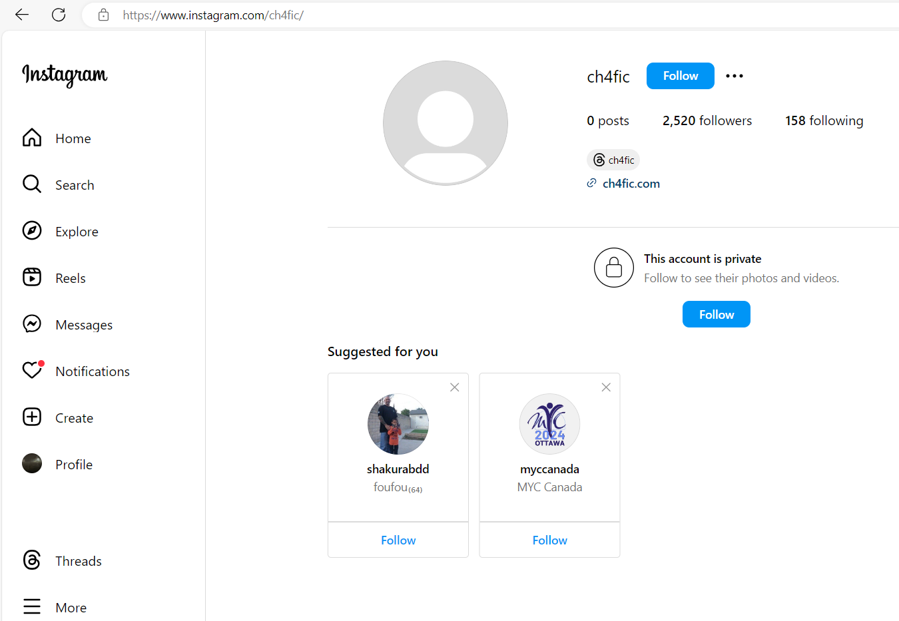
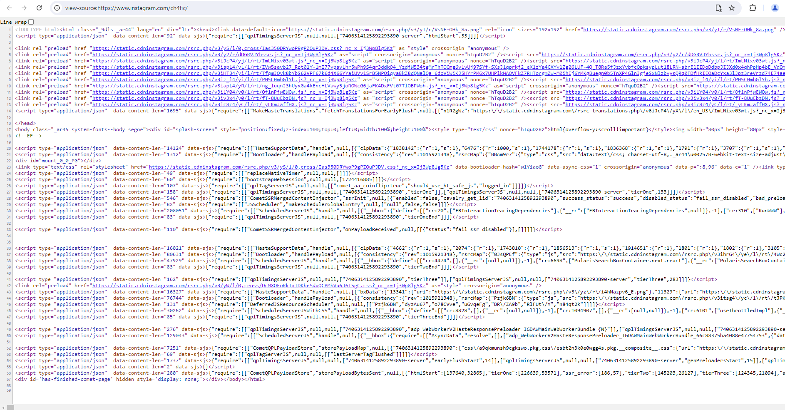
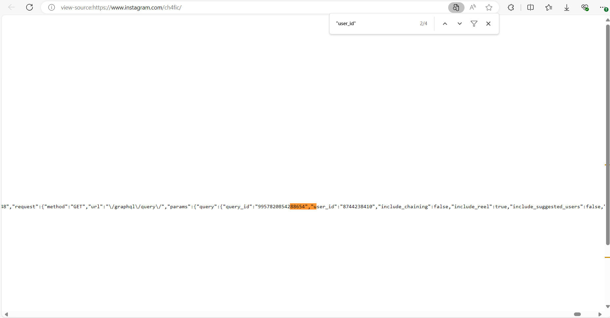
At this point, you have successfully retrieved the user ID and are ready for the next part.
Part 2: Getting the lists
Once you have retrieved the user ID, you can now proceed to extract the followers or following list. Note: this part may not work on Microsoft Edge due to Content Security Policy (CSP) restrictions. These restrictions prevent the necessary connections to Instagram’s servers, resulting in errors when attempting to fetch follower or following data.
- First, you’ll need to open the browser console. This is where you will paste and execute the scripts that will fetch the data. You can do this in a new tab, but I recommend staying in the source page from the previous step.
- Chrome: Press
Ctrl + Shift + J(Win) orCmd + Option + J(Mac). - Firefox: Press
Ctrl + Shift + K(Win) orCmd + Option + K(Mac). - Safari: Press
Cmd + Option + C. (For Safari, you may need to enable the "Develop" menu underSafari > Preferences > Advancedfirst).
- Chrome: Press
- In the console, you’ll first define the user ID and the type of list you want to retrieve (either followers or following). Copy and paste the following code into the console, replacing
your_user_idwith the actual user ID you retrieved in Step 1, and pressEnter. - userId: This should be the actual user ID you retrieved in step 1.
- list: Set this to
1if you want to retrieve the list of users the account is following, or2if you want to retrieve the list of followers. - Next, you’ll generate the URL that the script will use to fetch the data from Instagram. Copy and paste the following code into the console:
This script generates the URL that will be used to make the request to Instagram’s server. The URL will be displayed in the console (see image below).`https://www.instagram.com/graphql/query/?query_hash=c76146de99bb02f6415203be841dd25a&variables=` + encodeURIComponent(JSON.stringify({ "id": options.userId, "include_reel": true, "fetch_mutual": true, "first": 50 })) - Now, navigate to the generated URL from the console. This will load the first batch of data from Instagram. You should see a JSON response containing information about the followers or following, depending on your selection in the previous step.
- To retrieve all the followers or following, you'll need to loop through the paginated results. Note: You'll need to paste the first bit of code again in the console of the new URL (
var options =...). Once done, copy and paste the following script into the console:
This script will fetch all the usernames from the followers or following list, automatically handle pagination by requesting more data until the entire list is retrieved, and print out the complete list of usernames to the console.let config = { followers: { hash: 'c76146de99bb02f6415203be841dd25a', path: 'edge_followed_by' }, following: { hash: 'd04b0a864b4b54837c0d870b0e77e076', path: 'edge_follow' } }; var allUsers = []; function getUsernames(data) { var userBatch = data.map(element => element.node.username); allUsers.push(...userBatch); } async function makeNextRequest(nextCurser, listConfig) { var params = { "id": options.userId, "include_reel": true, "fetch_mutual": true, "first": 50 }; if (nextCurser) { params.after = nextCurser; } var requestUrl = `https://www.instagram.com/graphql/query/?query_hash=` + listConfig.hash + `&variables=` + encodeURIComponent(JSON.stringify(params)); var xhr = new XMLHttpRequest(); xhr.onload = function(e) { var res = JSON.parse(xhr.response); var userData = res.data.user[listConfig.path].edges; getUsernames(userData); var curser = ""; try { curser = res.data.user[listConfig.path].page_info.end_cursor; } catch { } var users = []; if (curser) { makeNextRequest(curser, listConfig); } else { var printString ="" allUsers.forEach(item => printString = printString + item + "\n"); console.log(printString); } } xhr.open("GET", requestUrl); xhr.send(); } if (options.list === 1) { console.log('following'); makeNextRequest("", config.following); } else if (options.list === 2) { console.log('followers'); makeNextRequest("", config.followers); }
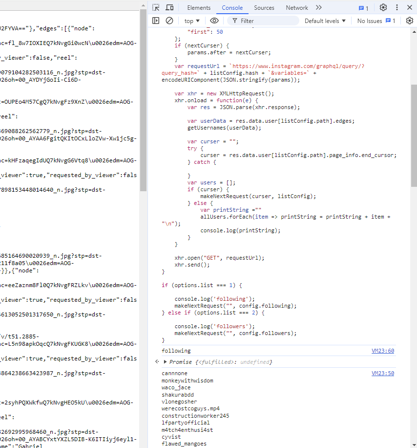
×
Troubleshooting
If you are getting an unfulfilled promise, double check these things:
- Make sure you are logged in to Instagram.
- Make sure you are not in incognito mode or otherwise preventing Instagram from verifying your login information.
- Make sure the account whose information you are trying to access is either public, or they have allowed you to follow them. Accounts you blocked or have you blocked will not work.
One way to check for an issue is the make sure the page you go to in step 4. has data. If it looks like this:
{"data":{"user":{"edge_followed_by":{"count":196,"page_info":{"has_next_page":false,"end_cursor":null},"edges":[]},"edge_mutual_followed_by":{"count":0,"edges":[]}}},"status":"ok"}
then you are either not logged in, the user is private and you do not have access to view their follows/followers, or your browser is not allowing cookies and Instagram cannot confirm your identity.
Now, just repeat what we did from 2. to generate the other list (use1if you already used2in the first iteration and vice versa).
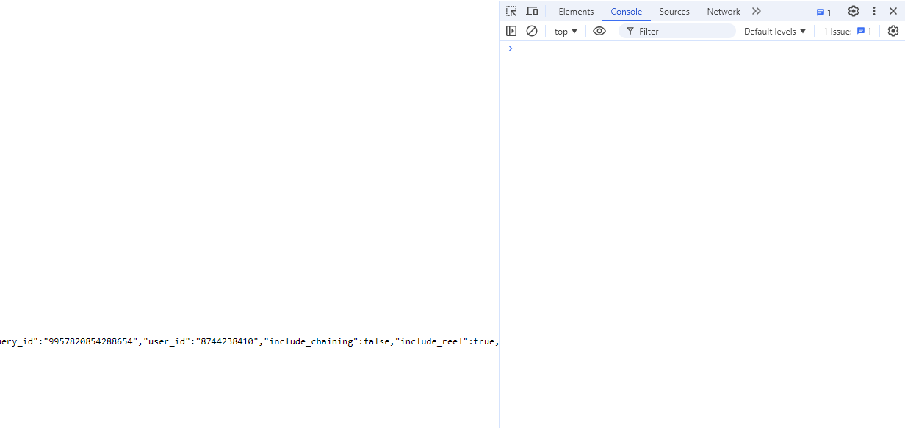
options = {
userId: your_user_id,
list: 1 // 1 for following, 2 for followers
}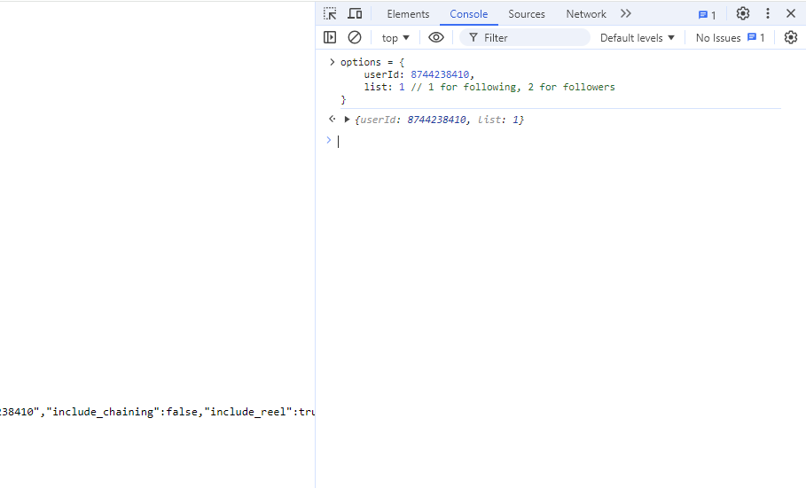
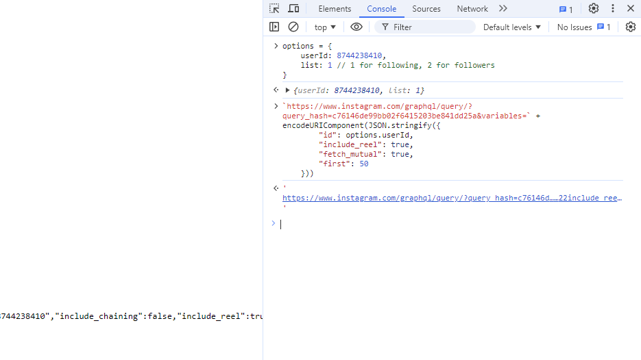
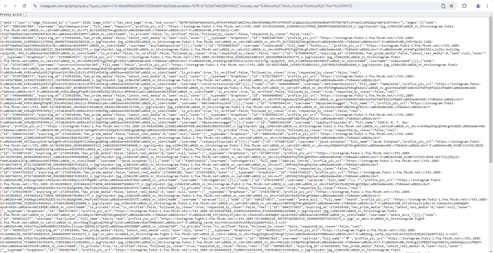
Using The Tool
Part 1: Loading and saving your generated lists
Now that you’ve successfully generated the followers and following lists, you're ready to dive into using the InstagramTracker tool! This tool makes it incredibly easy to track changes in these lists over time.
- Navigate to the home page of the InstagramTracker tool here.
- Copy the list of usernames you generated earlier (either followers or following) and paste it into the text box on the home page.
- Select whether the list you’re loading is the “Followers” list or the “Following” list from the dropdown menu.
- Click the
Load Listbutton to display the list of usernames into the tool. - Repeat the process for the other list. If you’ve already loaded the "Followers" list, now load the "Following" list (or vice versa).
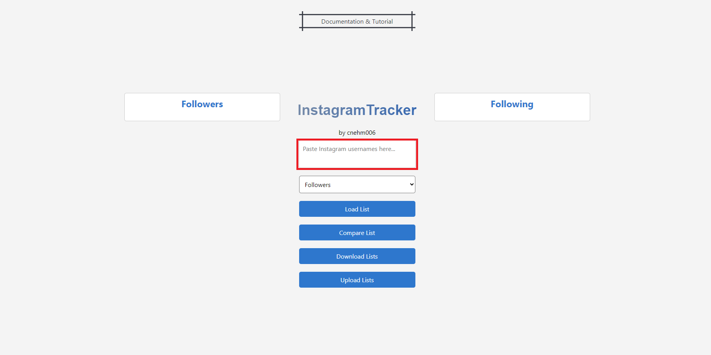
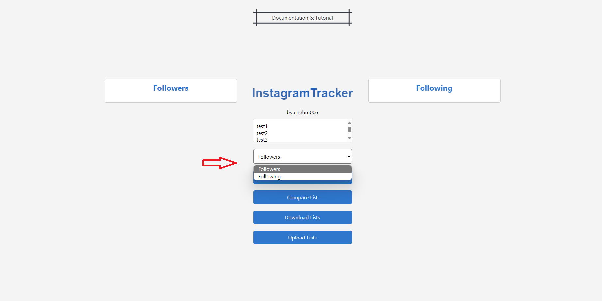
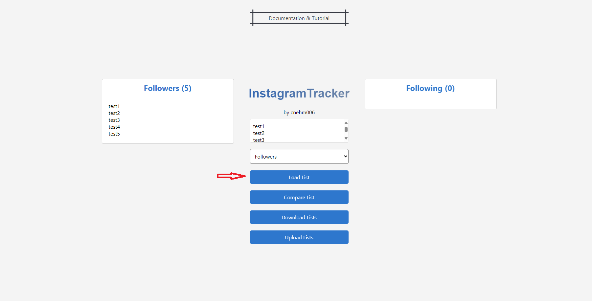
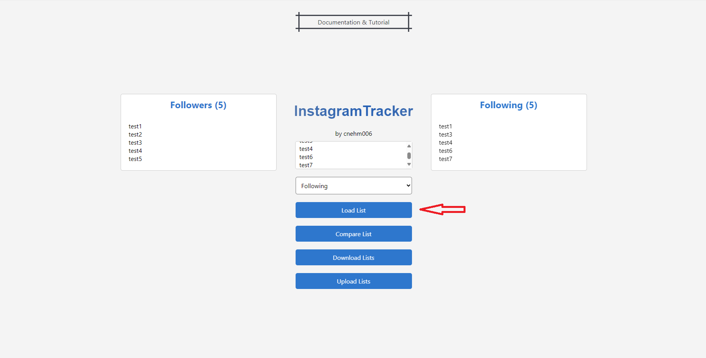
Once both lists are loaded, click the Download Lists button. This will save your current followers and following lists into a text file on your computer. Store this text file somewhere safe on your computer. You’ll need it later to compare with updated lists and see what’s changed. Do NOT edit the text files. Editing the text files can cause the tool to malfunction and may result in inaccurate tracking of changes. It is crucial to keep the integrity of the text files intact for the tool to work properly.
Part 2: Comparing your lists
After a few days or whenever you want to check for changes, return to the InstagramTracker tool.
- Click the
Upload Listsbutton and select the text file you saved earlier. This will reload your previous followers and following lists into the tool. - Generate a new followers or following list from Instagram following the same steps as before (see part 2 of First Time Tutorial), then copy and paste this new list into the text box.
- Select the correct list type (Followers or Following) from the dropdown menu, and then click
Compare List. The tool will automatically show you the differences: which users have been removed and which new users have been added since the last time you saved your lists. - Repeat the comparison for the other list as well (if you compared Followers, now do Following, or vice versa).
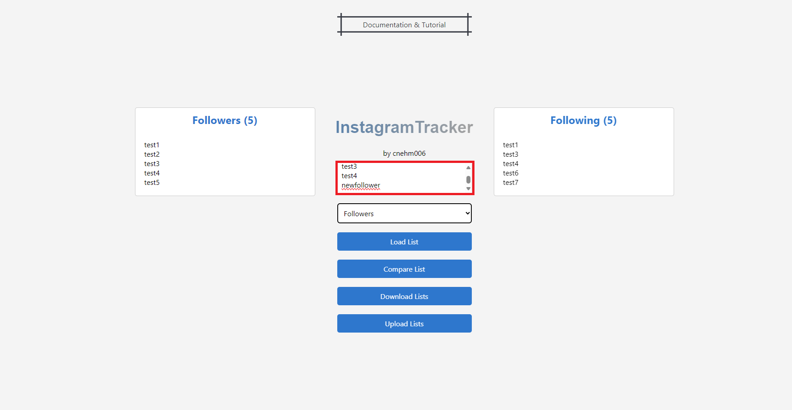
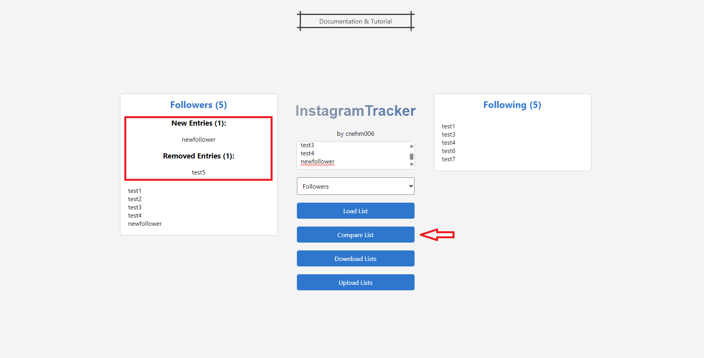
Thank you for reading!
With these straightforward steps, you can efficiently monitor changes in your Instagram followers and following lists. Whether you're analyzing follower trends, managing your network, or keeping a close eye on specific connections, this tool provides a reliable and user-friendly solution to help you stay informed. Leverage this tool to maintain an up-to-date view of your social connections - you never know who might be paying closer attention to you or who’s quietly stepping away.